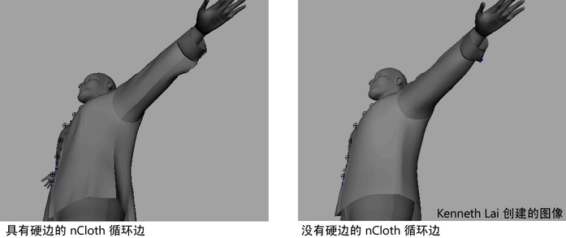

以下过程详细介绍如何使 nCloth 保留其变形的图形。例如，可以创建一个压碎的纸板盒或凹陷的金属垃圾桶。
超出其恢复限制凹陷、压碎或扭曲 nCloth
- 为需要凹陷、压碎或扭曲的对象选择 nCloth 对象，并使其保持其变形的状态。
- 在“属性编辑器”(Attribute Editor)中，选择“nClothShape”选项卡。
- 在“动力学特性”(Dynamic Properties)区域中，为 nCloth 设置下列内容：
- “恢复角度”(Restitution Angle)确定选定 nCloth 对象不能再返回到其静止的角度前，可以在边上弯曲的距离（以度为单位）。可以将“恢复角度”(Restitution Angle)与“弯曲阻力”(Bend Resistance)合并，以模拟变形金属。
- “恢复张力”(Restitution Tension)确定了在选定 nCloth 对象中链接不再返回其静止长度之前，可以拉伸的长度。您可以使用“恢复张力”(Restitution Tension)来模拟像被拉伸的橡皮泥的物质。
另请参见 nCloth 动力学特性。
在与接缝或折痕相似的 nCloth 上创建隆起
- 选择要在其上创建屋脊以模拟的缝隙或折痕的 nCloth 对象（输出网格）
- 选择“边”(Edge)组件选择模式。
- 在要生成折痕的边的行中双击一个边。
现在已选定行或循环中的所有边。
- 在“多边形”(Polygons)菜单集中，选择“网格显示 > 硬化边”(Mesh Display > Harden Edge)。
硬化的循环边现在是屋脊，类似于 nCloth 对象中的接缝或折痕。此屋脊在其 nCloth 的模拟期间保留其形状。
